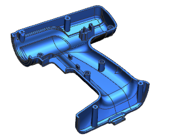
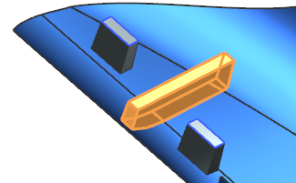
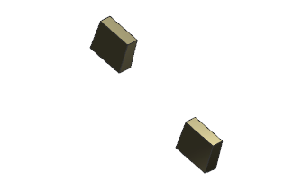

打开 wav3_120170。

确保未选中工具→更新→部件间更新→延迟几何体、表达式和 PMI 选项。
在部件导航器中，右击链接部件模块 “Trigger Design”并选择全部展开。
链接部件模块中包含两个收集器：输入以及输出，工作收集器位于链接的部件文件中，在输出收集器中，注意到两个面都是 WAVE 链接。
在链接的部件文件中，已经在手钻外壳的开关区域中添加了一个肋板，要完成设计，您需要将这个肋板添加到主部件文件中。

右击链接部件模块 “Trigger Design”并选择链接部件设为工作部件。
将显示链接部件模块文件。
